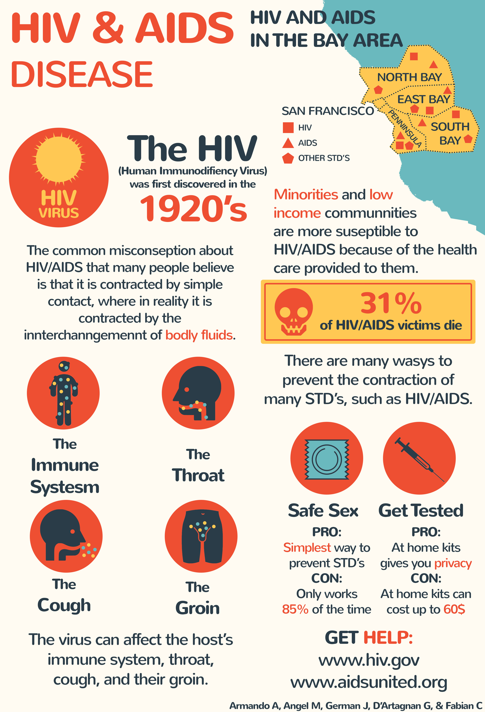

HIV stands for human immunodeficiency virus. It is the virus that can lead to acquired immunodeficiency syndrome, or AIDS, if not treated. Unlike some other viruses, the human body can’t get rid of HIV completely, even with treatment. So once you get
HIV, you have it for life. HIV attacks the body’s immune system, specifically the CD4 cells (T cells), which help the immune system fight off infections. Untreated, HIV reduces the number of CD4 cells (T cells) in the body,
A human cell.
making the person more likely to get other infections or infection-related cancers. Over time, HIV can destroy so many of these cells that the body can’t fight off infections and disease. These opportunistic infections or cancers take advantage of a very weak immune system and signal that the person has AIDS, the last stage of HIV infection. No effective cure currently exists, but with proper medical care, HIV can be controlled. The medicine
Scientists researching the effects of HIV.

used to treat HIV is called antiretroviral therapy or ART. If taken the right way, every day, this medicine can dramatically prolong the lives of many people infected with HIV, keep them healthy, and greatly lower their chance of infecting others. Before the introduction of ART in the mid-1990s, people with HIV could progress to AIDS in just a few years. Today, someone diagnosed with HIV and treated before the disease is far advanced can live nearly as long as someone who does not have HIV.
